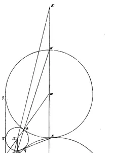

Arbelos Circle Chain: Propositions 14–18¶
Synagoge Book IV, Chs. 19–26 / Props. 14–18 (Hultsch I, pp. 208–228)
19. (14) There is handed down among certain writers an ancient proposition of the following kind: let three semicircles tangent to one another be supposed, ABG, ADE, and EZG, and into the space between their circumferences, which they call the arbelos, let circles be inscribed tangent both to the semicircles and to one another, as many as one may please; the perpendicular dropped from the center of the \(n\)-th circle equals \(n\) times its own diameter:
Atomic Propositions¶
Proposition 14: The Ancient Theorem on the Arbelos
Προτάσεις ιδ΄–ιη΄ · Ἡ ἀρχαία πρότασις περὶ τοῦ ἀρβήλου
19. ιδ΄. Φέρεταί τις ἐν τισιν ἀρχαία πρότασις τοιαύτη· ὑποκείσθω τρία ἡμικύκλια ἐφαπτόμενα ἀλλήλων τὰ ΑΒΓ ((O0, A)) ΑΔΕ ((O1, A)) ΕΖΓ ((O2, D)), καὶ εἰς τὸ μεταξὺ τῶν περιφερειῶν αὐτῶν χωρίον, ὃ δὴ καλοῦσιν ἄρβηλον, ἐγγεγράφθωσαν κύκλοι ἐφαπτόμενοι τῶν τε ἡμικυκλίων καὶ ἀλλήλων ὁσοιδηποτοῦν· δειχθήσεται δὲ πρότερον τὰ λαμβανόμενα.
Arbelos Circle Chain · Inversive Geometry & Historical Notes
While modern geometers prove \(y_n = n\,d_n\) by circular inversion centered at \(A\), Pappus establishes the entire chain purely synthetically via Props. 15–17 without departing from Euclidean tangents and power-of-a-point ratios (Elements III.36). Modern treatments call these Pappus–Steiner chains (after Jakob Steiner).
Arbelos Circle Chain · Section Summary
Prop. 14: Enunciation of the ancient altitude law \(y_n = n\,d_n\) and scope (internal and external arbelos).

Proposition 15: Tangent Circles and Radical Axis
Proposition 16: Altitude Relation for an Inscribed Circle
